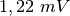
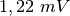

Mesure de température à l’aide d’une sonde PT100
Objectif
Enregistrer la température d’un liquide à l’aide d’un thermomètre à
résistance de platine. La résistance d’un module PT100 est dépendante de
la température par la relation
 , où
, où
 et
et  .
.


Procédure
- Entrer le gain l’erreur d’offset et la valeur du courant de CSS
- Sélectionner l’intervalle de température et les intervalles de temps
- Sélectionner les paramètres requis et cliquer sur DÉMARRER
Discussion
Un graphique de refroidissement de l’eau d’un récipient est montré sur la figure.
Pour mesurer la résistance d’un élément PT100, on le connecte entre CSS
et GND et on mesure la tension à ses bornes. Il est possible de mesurer
la valeur exacte de CSS à l’aide d’un multimètre ou en mesurant la
tension aux bornes d’une résistance connue. L’entrée de A3 est amplifiée
11fois en connectant une résistance de  entre Rg et GND.
entre Rg et GND.
La résistance d’une sonde PT100 est  à
à  . Elle change
pratiquement de
. Elle change
pratiquement de  , modifiant la tension de
, modifiant la tension de
 . La
sortie du convertisseur analogique numérique change d’un bit de poids
faible pour un changement de  dans la tension d’entrée, donc
un changement de température de moins de 3°C ne serait pas toujours
détecté. On utilise un amplificateur non-inverseur pour augmenter la
résolution. Le gain de cet amplificateur doit être tel que la
température maximale mesurée donne une tension de sortie inférieure à
3,3V. Modifier le champ «gain» selon.
. La
sortie du convertisseur analogique numérique change d’un bit de poids
faible pour un changement de  dans la tension d’entrée, donc
un changement de température de moins de 3°C ne serait pas toujours
détecté. On utilise un amplificateur non-inverseur pour augmenter la
résolution. Le gain de cet amplificateur doit être tel que la
température maximale mesurée donne une tension de sortie inférieure à
3,3V. Modifier le champ «gain» selon.